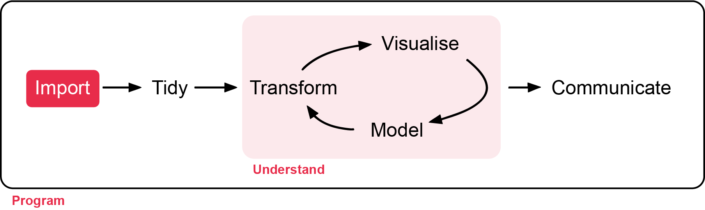

# Week 1 workshop - Getting started
# Getting familiar with R
# Written by Nicholas Wu, 06/11/2026, Murdoch UniversityIntroduction to R
Before you start the first workshop in week 1, you will need to be familiar with R, RStudio, and the basics of coding.
Before we start
This step can be skipped if you have R and Rstudio already downloaded and installed.
Murdoch computer
All Murdoch computers have R and Rstudio available. Login to your account and access Rstudio on your work computer.
Your own computer
If you are using your own personal computer in this unit, here are the steps for downloading and installing R and Rstudio.
- Install R
- Go to https://cran.r-project.org
- Choose your operating system and follow the instructions to install.
- Install RStudio
- Go to https://posit.co/download/rstudio-desktop/
- Download the free version of RStudio Desktop.
- Install it on your computer.
Step 1: Open RStudio
Once you have opened RStudio, you are introduced to the interface where you can see four panels:
- Source: Top-left where you write and save your code.
- Console: Bottom-left where commands run.
- Environment/History: top-right See your datasets and objects (variables) and previous commands (“History” tab).
- Plots/Packages/Help/Files: Bottom-right to view graphs and manage tools. You can also use the “Files” tab to navigate and set the working directory. The “Plots” tab will show the output of any plots generated. In “Packages” you will see what packages are actively loaded, or you can attach installed packages. “Help” will display help files for R functions and packages. “Viewer” will allow you to view local web content (e.g. HTML outputs).

Step 2: First R Commands
Click File > New File > R Script to start.
Start by noting who is writing, the date, and the main goal. In our case, determining how many species from different taxa have been recorded in Perth. Here’s an example, which you can copy, paste and edit into your new script and change the content:
The # (hash/pound) is to tell R to not run this line of text. i.e., the comment will not be evaluated (like in the code above.). Typically, the # is used to annotate or give explanation for what the code is doing.
Note
Comment often and in detail. Someone should be able to understand what you did and why. Including your future self.
Let’s try typing and running some code. Type the following code blow into the ‘source’ window (Fig. 1) and run each line so it shows up in the ‘console’ window.
Variables
To run each line, use either
- Ctrl + Enter (Windows)
- Cmd + Enter (Mac)
# Create a variable: number of frogs counted at a pond
frogs <- 18
# Add 5 frogs observed the next day
frogs_total <- frogs + 5
# Print result
frogs_total
# You can now do additions in R with variables!Here, you can created a new object frogs with the assignment operator “<-”. object_name <- value
Vectors
Try this one too which creates a list of numbers assigned to a vector object leaf_sizes, and then calculates the mean value of this list:
# Mean leaf size of 5 Eucalyptus trees (cm²) as a 'vector'
leaf_sizes <- c(23.4, 21.8, 25.1, 19.7, 22.5)
# Calculate the average leaf size using the mean() function
mean(leaf_sizes)
# You can can how create objects (leaf_size) that contain variables (23.4, 21.8, 25.1, 19.7, 22.5) in R!Dataframe
This is the most common object we will be working with in this workshop in a table format with rows (left-right) and columns (top-down).
# Here is the an example species and mass using the data.frame() function.
example_data <- data.frame(
species = c("Lizard", "Bird", "Bat"),
mass = c(15, 120, 35)
)
example_dataExercise (1 min)
🧪 Challenge: How would you find the largest leaf size?
Use the max() function.
Show answer
max(leaf_sizes)Step 3: Loading Packages

The next few lines of code usually load the packages you will be needing for your analysis. A package is a bundle of commands that can be loaded into R to provide extra functionality. For example, you might load a package for formatting data, or for making maps.
To install a package, type install.packages("package-name"). You only need to install packages once, so in this case you can type directly in the console box, rather than saving the line in your script and re-installing the package every time.
Once installed, you just need to load the packages using library(package-name). Here, we will load the most common packages we will be using in this unit.
The next lines of code should define your working directory. This is a folder on your computer where R will look for data, save your plots, etc. To make your workflow easier, it is good practice to save everything related to one project in the same place, as it will save you a lot of time typing up computer paths or hunting for files that got saved R-knows-where.
For instance, you could save your script and all the data for this tutorial in a folder called “Intro_to_R”. It is good practice to avoid spaces in file names as it can sometimes confuse R. For bigger projects, consider having a root folder with the name of the project (e.g. “My_PhD”) as your working directory, and other folders nested within to separate data, scripts, images, etc. (e.g. My_PhD/Chapter_1/data, My_PhD/Chapter_1/plots, My_PhD/Chapter_2/data, etc.)
To find out where your working directory is now, run the code getwd(). If you want to change it, you can use setwd(). Set your working directory to the folder you just downloaded from GitHub:
# Install packages using the install.packages() function.
install.packages("tidyverse")
# Load the tidyverse package
library(tidyverse)
# This is an example filepath. Change the quoted area to your own filepath
setwd("C:/User/CC-1-RBasics-master")
Note
Use quotation marks " when installing a package, but not when loading it.
For windows, the copied file directory will use \ but R does not reckonise this. Replace backslashes \ with forward slashes/ intead. So your filepath should like "C:/folder/data", and not "C:/folder/data".
Warning
Whenever you see an error like this:
library(ggrepel)
#> Error in library(ggrepel) : there is no package called ‘ggrepel’You need to run install.packages("ggrepel") to install the package.
Step 4: Loading Files
Imagine we’ve collected leaf-trait data to look at the growth of seedlings from untreated (control) and calcium-treated sites. The additional calcium is hypothesised to increase the growth of the seedlings. The file is called plant_calcium.csv from the GitHub page. The original data with background explanation of the study is linked here.
First, save the file from the GitHub page to your RStudio project folder (wherever you set your directory). The plant_calcium.csv is in the ‘data’ folder.
# Load a CSV file
#plant_calcium_data <- read_csv("https://raw.githubusercontent.com/nicholaswunz/ECS200-Workshop/refs/heads/main/data/plant_calcium.csv")# Here is an example working directory from my folder, remember to replace with yours.
setwd("C:/Users/75002992/OneDrive - Murdoch University/Teaching/ECS200 - Research Methods in Ecology/ECS200-Workshop/data")
# Load a CSV file and give it an object name called plant_calcium_data
plant_calcium_data <- read_csv("data/plant_calcium.csv")
# View the first few rows of plant_calcium_data
head(plant_calcium_data)
# Displays the last rows of plant_calcium_data
tail(plant_calcium_data)
# Tells you whether the variables are continuous, integers, categorical or characters (see Exploring data below)
str(plant_calcium_data)
glimpse(plant_calcium_data)
# num or <dbl> means number values
# chr or <chr> means character values
Warning
Whenever you see an error like this:
data <- read_csv("data.csv")
#> Error in read_csv("data.csv") : could not find function "read_csv"It means the package associated with the function is not loaded properly. Load the approporate package. In this case, it is tidyverse.
Here is another common error:
data <- read_csv("data.csv")
#> ! data.csv does not exist in current working directoryIt means the data.csv could not be found. A couple of ways you can check what the issue is:
Name is incorrect: Check your filename if it is correctly spelt out (check capital letters, dash, space etc)
the file is not in the same working directory. Check where the folder the data is kept it. Make sure they match each other. Either more the data file to the correct folder or change the woprking directory.
Note
Remember to save your script once in a while! If you haven’t saved it already, why not save it in the same directory as the rest of the tutorial file, and give it a meaningful name.
Step 5: Exploring the Data
str(object.name) is a great command that shows the structure of your data (atomic class). So often, analyses in R go wrong because R decides that a variable is a certain type of data that it is not.
For instance, you might have four study groups that you simply called “1, 2, 3, 4”, and while you know that it should be a categorical grouping variable (i.e. a factor), R might decide that this column contains numeric (numbers) or integer (whole number or count) data.
If your study groups were called “one, two, three, four”, R might decide it’s a character variable (words or strings of words), which will not get you far if you want to compare means among groups.
Bottom line: always check your data structure!
| Class | Description | Examples | Use |
|---|---|---|---|
| numeric | These are numbers that can take any value within a range (continuous). | 3.14, -2.5, 100.5 | Height, weight, temperature. |
| integers | Whole numbers without decimal points. | 1, 10, 100, 0, -42 | Counting items, indexing. |
| factors | Variables that take on a limited number of distinct values (categorical). | “low”, “medium”, “high” or “male”, “female” | Grouping data, statistical modeling. |
| character | Text data. | “apple”, “hello world” | Names, labels, descriptions. |
You can see that when you run str(plant_calcium_data), each column has the name of the variable and the class type next to them. For example, year is a num class (numeric), elevation is a chr class (character) etc.
You’ll notice the watershed variable shows as a character variable, but it should be a factor (categorical variable) consisting of a reference (untreated) category and a W1 (calcium-trated) category, so we’ll force it to be one. When you want to access just one column of a data frame, you append the variable name to the object name with a dollar $sign. This syntax lets you see, modify, and/or reassign this variable.
# Displays the first few rows of this column only (the reference group)
head(plant_calcium_data$watershed)
# Tells you what type of variable we're dealing with: it's character now but we want it to be a factor
class(plant_calcium_data$watershed)
# What are we doing here?!
plant_calcium_data$watershed <- as.factor(plant_calcium_data$watershed)
# check if watershed is now a factor
str(plant_calcium_data) # should say Factor
dplyr::glimpse(plant_calcium_data) # should say <fct>In that last line of code, the as.factor() function turns whatever values you put inside into a factor (here, we specified we wanted to transform the character values in the watershed column from the plant_calcium_data object).
However, if you were to run just the bit of code on the right side of the assignment operator <-, it would work that one time, but would not modify the data stored in the object. By assigning with the <- the output of the function to the variable, the original plant_calcium_data$watershed in fact gets overwritten; the transformation is stored in the object.
Try again to run class(plant_calcium_data$watershed) - what do you notice?
# More exploration
# Displays number of rows and columns
dim(plant_calcium_data)
# Gives you a summary of the data
summary(plant_calcium_data)
# Gives you a summary of that particular variable (column) in your dataset
summary(plant_calcium_data$watershed) Terminologies
| Term | Explanation | Example |
|---|---|---|
| Console | The area where R executes commands immediately. | Typing mean(c(1,2,3)) |
| Script | A saved file containing R code. | analysis.R |
| Environment | The workspace showing stored objects currently in memory. | Variables like x, data |
| Object | Anything stored in R, such as data, functions, or models. | x <- 5 |
| Variable | A named object storing a value. | temperature <- 32 |
| Operator | Used to assign values to objects. | <- |
| Function | A reusable command that performs a task. | mean() |
| Argument | Information passed into a function. | mean(x, na.rm = TRUE) |
| Vector | A one-dimensional collection of values of the same type. | c(1,2,3) |
| Logical | TRUE/FALSE values. | TRUE |
| Dataframe | A table-like structure storing rows and columns. | data.frame() |
| Comment | Notes ignored by R. | # this is a comment |
Extra Stuff
Why is my code not working!
Computers are only as smart as the humans that use them.
If your code is not working there is most likely a spelling mistake or a t ypographic error. These human errors are easy to miss but equally easy to fix!

If your code is not working take a moment to breathe. Then check for common, minor errors such as:
- Spelling mistakes
- Wrong dataset name
- Wrong variable (column) name
- Missing or wrong quotation mark
- Missing bracket
- Inconsistent cases (e.g. Uppercase)
- Missed a step
- Invalid syntax (e.g. spaces)
- Duplicates of the same function with multiple errors – keep your scripts tidy!
- These reading/typing mistakes are the majority of encountered errors. They are not a big deal and are easily corrected.
You can and should easily fix the above mistakes yourself! We want you to know how to work problems out independently.
Exercise
🧪 Why does this code not work?
my_variable <- 10
my_varıable
#> Error: object 'my_varıable' not foundLook carefully! This may seem like an exercise in pointlessness, but training your brain to notice even the tiniest difference will pay off when programming.
Additional Resource
- Getting started with R and RStudio: A more in-depth version of this tutorial.
- Troubleshooting and how to find help.
A vector is simply a list of items that are of the same type.↩︎